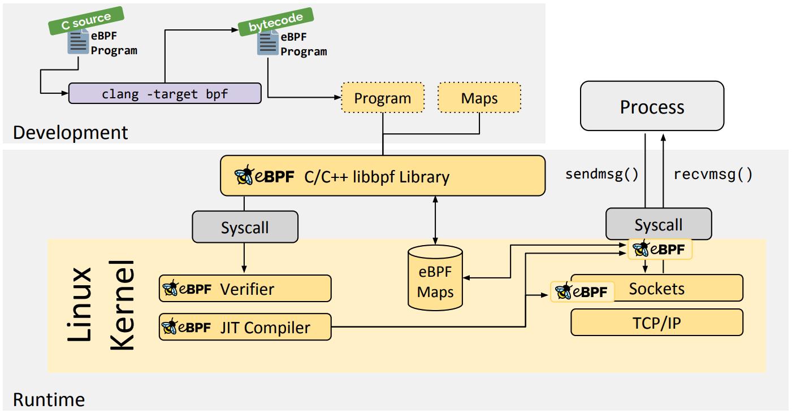
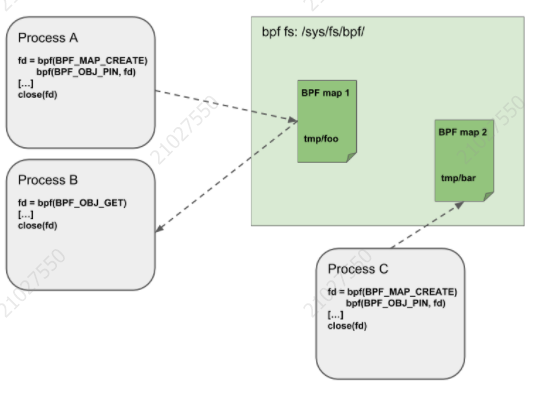
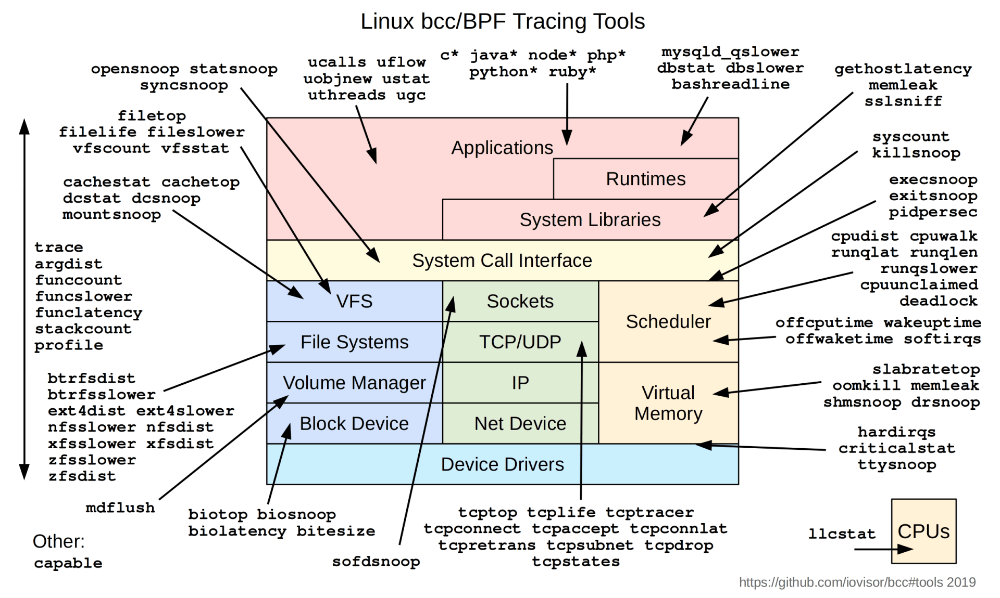
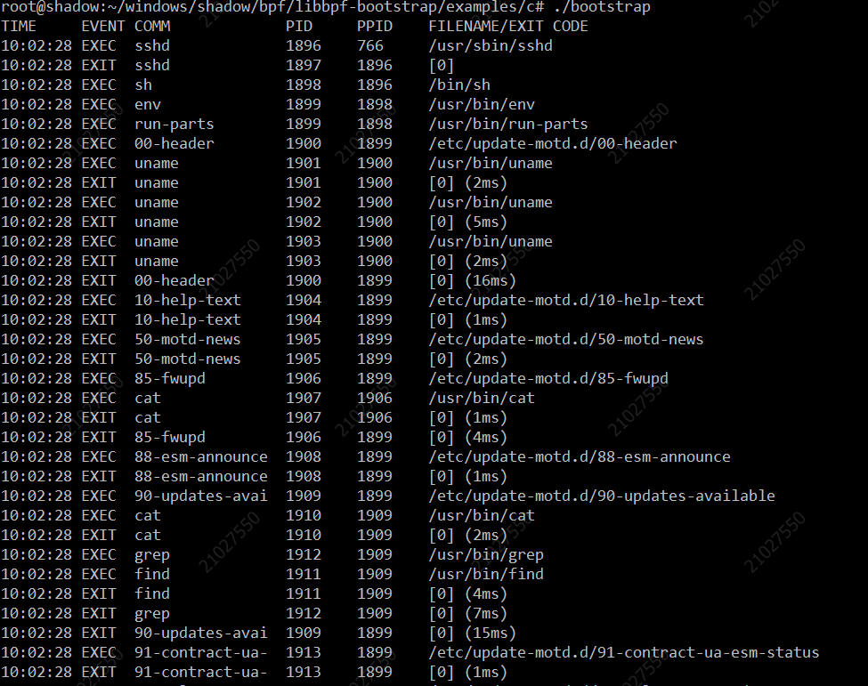
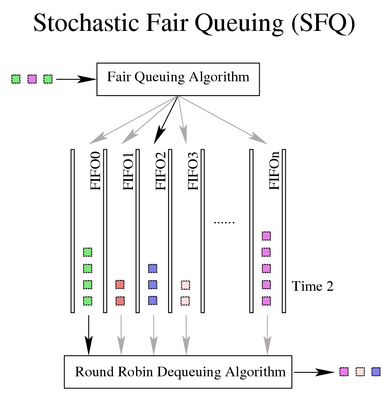
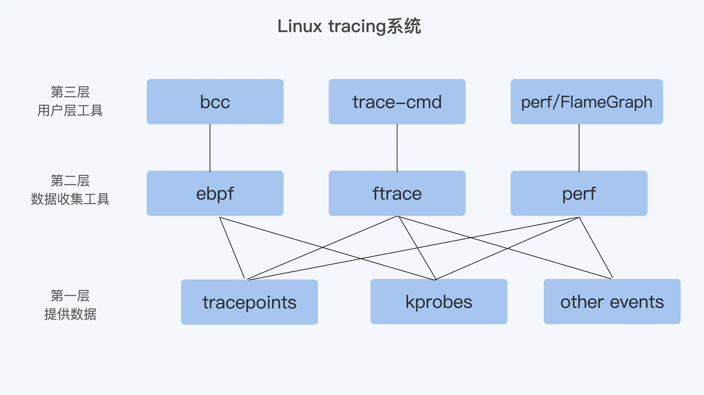
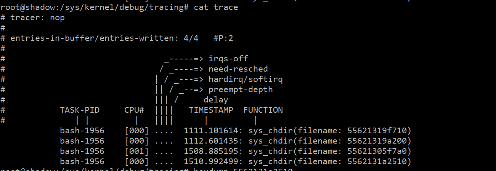
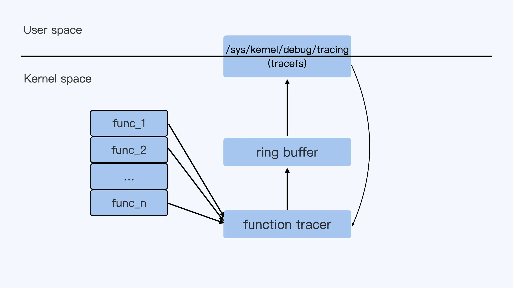
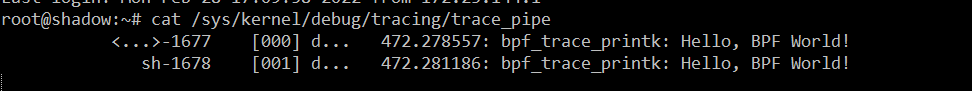

前言
eBPF已经成为时下最为火热的技术之一，在保证安全的情况下，通过在内核中嵌入用户自定义代码，干涉内核的行为，使内核变为可编程，在安全、网络、跟踪&性能分析、观测&监控等场景中发挥着巨大的作用。
本文属于新手入门eBPF编程，通过一些基础概念和Demo演示，从初学者角度理解eBPF的实现原理和使用方式。
新手上路
eBPF

上图是[eBPF官网使用](https://ebpf.io/what-is-ebpf)C语言，借助libbpf进行eBPF的工作流程，其中的C/C++ libbpf library也可换成BCC、Go library等，这些只是用户侧编程借助的工具不同，不影响整体流程。
下面就其中的一些基础概念，名字术语加以说明。
名词术语
LLVM/Clang
LLVM是"Low Level Virtual Machine"的简称。这个库提供了与编译器相关的支持，能够进行程序语言的编译期优化、链接优化、在线编译优化、代码生成。可以作为多种语言编译器的后台来使用。
Clang是一个C++编写的基于LLVM、发布于LLVM BSD许可证下的C／C++／Object-C／Object-C++ 编译器。
Clang是Apple公司用以取代GCC对C/C++/Object-C的编译的。
Bytecode
eBPF内核态程序需要通过clang/llvm编译成该类型文件，然后通过系统调用加载进内核虚拟机中执行。注意传统的GCC不支持生成eBPF的bytecode。
Verifier
对eBPF的bytecode进行安全检查，防止出现危及内核的程序操作。因此编写eBPF程序也有一些限制，例如循环限制等。
JIT（Just In Time）
即时编译器，在内核的虚拟机中解析执行eBPF的bytecode。
大部分的操作系统架构都内置了eBPF的JIT，可通过如下方式打开：
1 | echo 1 > /proc/sys/net/core/bpf_jit_enable |
编程基础
SEC
一个简单的BPF程序，包括如下几个部分：
程序附着的hook点，一般包括：程序类型/具体附着的函数（例如：tracepoint/syscalls/sys_enter_execve）。
可能需要保存状态（多次BPF调用、用户态程序通过文件描述符）的数据结构。
内核允许的License，否则内核会拒绝加载。
这三部分都是通过关键字SEC在程序中声明的。
程序类型
比较常见的重要的类型如下：
（1）Kprobe，通过注册Kprobe的方式，将程序插入到指定内核函数的前后。
（2）Tracepoint，attach到内核预定义好的tracepoint上。
（3）Socket Filter，attach到Socket上，可以定制化被Socket处理的数据包的网络流量处理逻辑。
（4）XDP，在网络数据包刚刚到达内核时，进行处理。
还有一些其它的类型，在ubuntu，可通过查看/usr/src/linux-headers-5.13.0-30-generic/include/uapi/linux/bpf.h，查找关键字 bpf_prog_type：
1 | /* Note that tracing related programs such as |
映射类型
单个BPF程序最多可直接访问64个不同map。map的实现由核心内核提供，有per-CPU、non-per=CPU的通用map，可以使用一组通用的BPF赋值函数来进行维护操作。也有非通用map，针对特定的问题，需要在各次BPF程序调用之间保持额外的状态（非数据）。
在ubuntu，可通过查看/usr/src/linux-headers-5.13.0-30-generic/include/uapi/linux/bpf.h，查找关键字 bpf_map_type：
1 | enum bpf_map_type { |
license
由于Linux内核是根据GPL许可的，因此它也只能加载以GPL许可的程序。
1 | char _license[] SEC("license") = "GPL"; |
Helper Functions
辅助函数是内核提供的，能够让BPF程序从内核中查询数据，或者将数据推送到内核。不同BPF程序能够使用的辅助函数可能是不同的。
编写程序时，通过[bpf_helpers.h](https://github.com/iovisor/bcc/blob/master/docs/kernel-versions.md#program-types)引入辅助函数。
Object Pinning
BPF map和程序作为内核资源只能通过文件描述符访问，其背后是内核匿名的inode。然而，文件描述符受限于进程的生命周期，使得map共享之类的操作非常笨重。
为了解决这个问题，内核实现了一个最小内核空间BPF文件系统。BPF map和BPF程序都可以钉到这个文件系统内。

Tail Calls
尾调用，一个BPF程序可以调用另一个BPF程序，并且调用完成后不用返回原来的程序（**bpf_tail_call()**）。
类型相同的BPF程序才可以进行尾调用。
BPF to BPF Calls
以上主要参考Cilium官网说明
受限于英语水平，可参考翻译版(版本1.10)
编程工具
利用eBPF编写生产可用的程序，一般包含三部分：
（1）eBPF程序，编译成bytecode的字节码。
（2）loader程序，负责通过bpf()的系统调用，将bytecode加载至内核中具体的hook点。
（3）用户空间程序，负责与eBPF的某些数据结构（Maps、Global）交互，读写数据。
此外，因为一些eBPF会读取内核中的数据结构（task_struct、skb等）来获取数据信息，因此需要依赖Linux内核的一些header定义。而不同Linux内核版本的header会发生改变，因此会导致编译好的eBPF程序只能在当前编译的宿主机上的内核版本下正常运行，缺乏对其他内核版本的兼容性，严重影响eBPF程序的分发部署。开发者也不可能为每次内核变动都编译相应的版本。
因此，需要一些开发者工具库，简化eBPF的开发过程，将所有程序打包成一个ELF文件，同时兼容多个Linux内核版本，支持CO-RE（Compile Once, Run Everywhere）。
很多前端工具，例如 bcc、perf、iproute2，都可以将 BPF 程序加载到内核。
BCC

BCC全称"BPF Compiler Collection"，为了便于eBPF的开发和使用，libbcc库中集成了clang/llvm编译器，让编译和运行处在同一节点上，但这样也带来了一些问题：
（1）运行BCC工具的节点上，必须安装内核头文件，以便于编译内核态eBPF代码。
（2）内置clang/llvm不仅占用磁盘，而且运行程序需要编译，启动时间长，会占用节点上的CPU和内存，这在生产环境中几乎是不可忍受的。
Libbpf
用户态BPF loader库。
CO-RE
简介
CO-RE是"Compile Once - Run Everywhere"的缩写。是用来解决eBPF程序适配多内核版本所遇到的问题的。
使用CO-RE编译出来的eBPF程序，可以在不同内核上运行。在Linux内核和eBPF程序之间，会通过BTF（BPF Type Format）来协调不同内核版本数据结构的变量偏移或者变量长度优化等问题。
eBPF程序include的一个vmlinux.h文件，这其中包含了所有的内核数据结构，它是由内核文件vmlinux（/sys/kernel/btf/vmlinux）的BTF信息转化而来。同时通过使用bpftool这个工具可以将eBPF编译成的.o文件重新生成一个C语言的头文件.skel.h，这个文件中定义了加载eBPF程序的函数，eBPF的bytecode也直接写在了这个文件中。用户态程序可以通过引用这个文件，调用里面自动生成eBPF加载函数。
实验
首先检查eBPF的编译环境和运行环境的Linux内核必须支持并开启BTF的功能。
1 | cat /boot/config-5.13.0-30-generic | grep CONFIG_DEBUG_INFO_BTF |
这里我们直接使用[libbpf-bootstrap](https://github.com/libbpf/libbpf-bootstrap) 这样项目进行实验，按照如下步骤：
1 | git clone https://github.com/libbpf/libbpf-bootstrap |
执行.bootstrap，远程登录系统，可以看到程序生效，输出一些内容，示意如下：

程序的具体内容，可通过查看源代码了解，这里不详作说明。
内核功能
eBPF程序需要附着在内核的hook点上执行相应的逻辑，内核通过各种各样的方式提供了许多hook附着点，下面就一些常用的主要的加以说明。了解Linux内核的这些功能，清楚它们常见的适用场景。
功能说明
XDP
XDP，是"eXpress Data Path"的缩写，主要有三种操作模式：
（1）原生XDP
这是默认模式。在这种模式下，XDP BPF程序直接在**驱动**的接收路径上运行。使用此模式时，检查驱动程序是否支持它很重要。
（2）Offloaded XDP
在这种模式下，允许将整个 BPF/XDP 程序 offload 到硬件，因此程序在网卡收到包时就直接在网卡进行处理，而不是在主机CPU上执行。通过将执行移出CPU，与本地XDP相比，此模式具有高性能的特点。
（3）通用XDP
这是一种测试模式，用于给那些还没有原生支持 XDP 的驱动进行试验性测试，很少在生产上使用。
位于内核协议栈的主接收路径（main receive path）上，接受的是`skb` 格式的包，但由于这些 hook 位于 ingress 路径的很后面，因此与 native XDP 相比性能有明显下降。
iproute2同时支持以上三种模式。Cilium就是面向iproute2加载器实现的。
Traffic Control
TC主要包括三个要素：队列规则（qdisc， Queue Disciplines）、类（Class）和过滤器（filter）。其中一个应用场景是模拟弱网环境。
TC在网卡设备的入口（ingress）流量的管控一般称为policing（流量策略），是可以进行丢弃，重定向的。这里一般是无法控制发送方的流量到达的。而在网卡设备的出口（egress）方向，则可以进行很多流量管控的措施，例如限制速率，按照优先级发送。一般的流量管控是指egress的方向，这里的流量管控称为shaping（流量整形）。
网卡发送数据包的排队规则（Queue Disciplines）：
简单、不分类排队规则（Simple、classless qdisc）
先入先出队列（pfifo_fast）
无法通过tc命令添加qdisc。依据数据包的TOS字段，内置了三个优先级队列。高优先级的队列数据发送完了，才发送低优先级的队列数据。


令牌桶过滤器（TBF，Token Bucket Filter）
基于令牌的速率限制。

随机公平排队（SFQ，Stochastic Fairness Queueing）
可以保证不同的tcp session或者是udp的flow分配到不同的队列，不会发生独占的情况。

分类别的排队规则（Classful qdisc）
- 优先级排队规则（PRIO qdisc）
- 基于类的排队规则（CBO qdisc， Class Base Queueing）
- 层级令牌桶（HTB， Hierarchical Token Bucket）
参考资料
Trace System

简介
Tracepoint
Tracepoint是在内核固定的hook点上，并不是所有的函数中都有tracepoint。
1 | # 使用perf list 查看所有的tracepoint |

Tracepoint在内核中的实现：是通过在代码中需要被trace的地方显式的加上hook点（内核源代码中预先写好），然后再把自己的probe函数注册上去，那么在代码执行的时候，就可以执行probe函数。
Kprobe
Kprobe可以动态地在把所有的内核函数（除inline函数）上挂载probe函数。
1 | ## 通过perf probe注册未实现tracepoint的函数 |
Kprobe在内核中的实现：把目标指令替换，替换成的指令可以使程序跑到一个特定的handler里去执行probe函数。
Uprobe
调试工具
perf
perf是基于事件的，可以通过perf list查看事件类型。主要分为：
（1）hardware event，主要来自处理的PMU（Performance Monitoring Unit），是底层处理器的行为。
（2）software event，主要是内核代码中的几个特定事件，比如上下文切换，缺页中断（page faults）。
（3）tracepoints event，与software event类似，也是在内核代码中注册了事件。
perf stat统计数量，perf record采样，后面可指定参数。
常用的性能分析方式是：perf record采样， FlameGraph生成火焰图，查看耗时较长的函数。
1 | ## 在容器中使用perf的限制 |
ftrace
ftrace，全称"function tracer"，从名字可以看出，这个工具是专门为了追踪内核函数的。

ftrace的操作基本上都可以在tracefs这个文件子系统中完成，例如ubuntu下在/sys/kernel/debug/tracing。
Hello World
根据之前libbpf-bootstrap的工程目录，现在进行Hello World的编写。在example/c目录下添加：
1 | vim hello.bpf.c |
1 | vim hello.c |
在Makefile中添加编译的的app hello。
1 | APPS = hello minimal bootstrap uprobe kprobe fentry |
